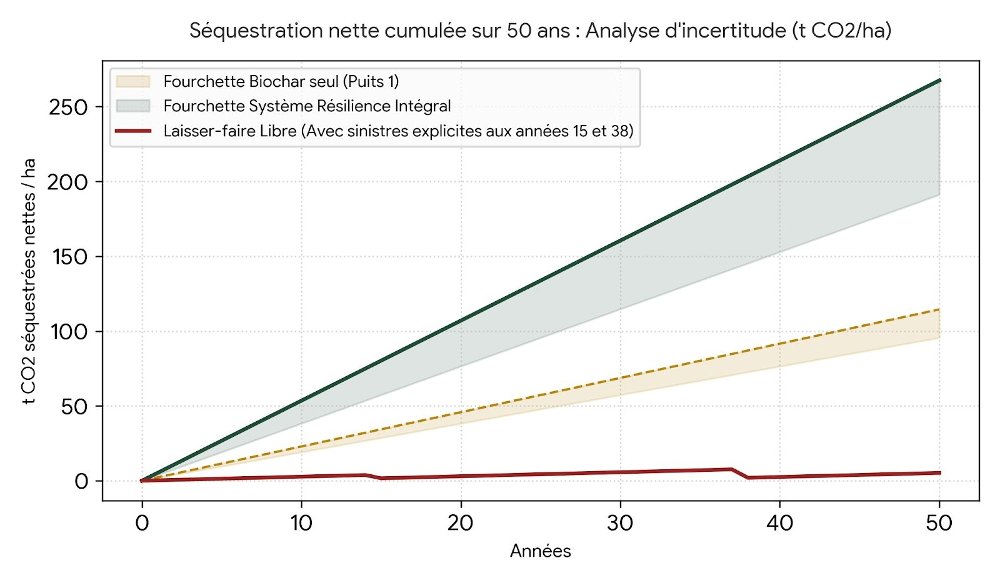

Séquestration CO₂ · Programme Résilience V11
La réponse n'est pas « forêt ou biochar ». C'est une fausse opposition — et la démographie mondiale la rend caduque.
La forêt capte naturellement le carbone atmosphérique. Le biochar rend durable une partie de cette captation en empêchant son retour rapide dans l'atmosphère. Les deux approches sont complémentaires — mais l'une séquestre pendant des millénaires, l'autre restitue tout en quelques décennies.
01 · Le cycle du carbone
L'observation est accessible à tout propriétaire de jardin : un tronc de plusieurs centaines de kilogrammes laissé au sol finit par ne représenter que quelques kilogrammes de résidus en 10 à 20 ans. Les branches broyées disparaissent sans laisser de trace visible. Ce carbone ne s'est pas évaporé — il est retourné dans l'atmosphère sous forme de CO₂ ou de méthane.
La répartition lors de la décomposition est sans appel : environ 95 % du carbone retourne vers l'atmosphère, et seulement 1 à 5 % s'incorpore en humus stable à long terme. C'est le cycle naturel — et il est globalement neutre, pas négatif.
Lorsque des résidus végétaux se décomposent en milieu peu oxygéné (fossés, tas humides, marais artificiels), une fraction du carbone devient du méthane. Or le méthane est 28 fois plus réchauffant que le CO₂ sur 100 ans. En transformant ces résidus en biochar plutôt qu'en les laissant fermenter, on évite également ces émissions — ce qui renforce considérablement le bilan climatique positif du système.
02 · La thèse écologiste
La thèse n'est pas sans fondement. Dans un monde stable à faible pression démographique, elle est partiellement défendable à l'échelle séculaire. Mais elle se heurte à des réalités empiriques imparables.
Les vieilles forêts non gérées accumulent plus de carbone total. La perturbation humaine interrompt des cycles d'accumulation multi-séculaires. Les sols forestiers anciens contiennent des stocks d'humus profond issus de millénaires de décomposition lente (Luyssaert et al., Nature 2008).
La forêt en équilibre ne réduit pas le CO₂ atmosphérique — elle le stabilise localement. La séquestration est réversible : un siècle de stock peut partir en quelques semaines lors d'un incendie. Reconstituer une vieille forêt prend 200 à 500 ans.
Le Canada a brûlé 18 millions d'hectares en 2023 — transformant le pays en émetteur net de CO₂ pour toute l'année. Un stock centenaire restitué en quelques semaines. C'est la fragilité structurelle du « laisser faire ».
Avec 10 milliards d'habitants sous pression alimentaire et énergétique croissante, la surface dédicable à des forêts anciennes non gérées ne peut qu'être limitée et constamment menacée. Le Brésil défriche encore 10 000 à 15 000 km²/an. L'Indonésie, le Congo, la Sibérie suivent la même dynamique.
L'Europe occidentale n'a quasiment plus de forêt primaire — elle l'a perdue avant l'ère industrielle. Plaider pour le « laisser faire » depuis Paris ou Berlin, c'est une posture de civilisation qui a déjà fait le travail de destruction.
03 · Comparaison quantitative
Estimations de séquestration nette par hectare et par an — ordres de grandeur issus de la littérature et du modèle Résilience V11 :
| Scénario | Séq. nette CO₂/ha/an | Permanence | Réversibilité | Horizon |
|---|---|---|---|---|
| Forêt ancienne libre (idéal) | 0 à +2 t CO₂ | Faible | Élevée | Siècles |
| Forêt ancienne libre (réaliste, avec sinistres) | 0 à −5 t CO₂ | Très faible | Très élevée | Incertain |
| Forêt gérée + bois construction | 1 à 3 t CO₂ | Moyenne | Modérée | Décennies |
| Biochar issu de biomasse résiduelle | 2 à 5 t CO₂ | Très élevée | Quasi nulle | Immédiat |
| Biochar + forêt gérée (combinaison optimale) | 3 à 7 t CO₂ | Élevée | Faible | Immédiat |
Note : la valeur négative du scénario forêt libre réaliste reflète les épisodes d'incendies majeurs (Canada 2023) qui peuvent transformer des puits en sources massives de CO₂ sur une seule année.
Figure 1 — Simulation comparative sur 50 ans · Programme Résilience V11

Biomasse résiduelle de référence : 5 t MS/ha/an. Rendement pyrolyse : 30 % massique (fourchette ±20 %). Puits 2 (CO₂ biogénique capturé) : 40 % additionnel (fourchette ±20 %). Sinistres simulés : perte de 80 % du stock accumulé aux années 15 et 38, reproduisant la vulnérabilité observée Canada 2023 / Amazonie. Bande dorée : Biochar seul (Puits 1). Bande verte : Système Résilience intégral (Puits 1 + Puits 2). Courbe rouge : Laisser-faire libre avec sinistres explicites.
| Technologie | Coût estimé (€/t CO₂) | Disponibilité | Co-bénéfices | Permanence |
|---|---|---|---|---|
| DAC (captage direct de l'air) | 300–1 000 | Limitée, énergivore | Aucun | Élevée si stockage géo. |
| BECCS (biomasse + CCS) | 100–250 | Partielle, complexe | Faibles | Élevée si injection géo. |
| Biochar | 30–150 | Immédiate et scalable | Agronomie, eau, sol | Très élevée (siècles) |
| Reforestation simple | 5–50 | Immédiate mais lente | Biodiversité | Faible (réversible) |
Parmi les solutions de séquestration durable actuellement disponibles, le biochar est l'une des moins coûteuses et la seule qui améliore simultanément la fertilité des sols.
04 · L'avantage décisif
La plupart des scénarios de neutralité carbone supposent un recours massif au captage direct de l'air (DAC). Le problème fondamental : l'atmosphère contient 430 ppm de CO₂, soit 0,043 %. Pour récupérer 1 tonne de CO₂, il faut traiter des millions de mètres cubes d'air — d'où les coûts et la consommation énergétique colossaux du DAC.
La biomasse a déjà réalisé gratuitement le travail le plus difficile : capter le CO₂ de l'air par photosynthèse et concentrer le carbone dans la matière végétale. Le Programme Résilience exploite cet avantage thermodynamique fondamental — sans compétition foncière, sans énergie supplémentaire.
Lors de la pyrogazéification, on obtient un flux de CO₂ biogénique à plusieurs dizaines de pourcents de concentration, voire quasi pur après épuration. Dans une économie post-fossile où les sources industrielles de CO₂ concentré auront disparu (raffineries, cimenteries), ce flux devient une matière première stratégique.
Si la France parvenait à produire 10 Mt de biochar par an (contenant environ 80 % de carbone stable), cela représenterait environ 29 Mt de CO₂ durablement retirés du cycle atmosphérique chaque année — soit 7 à 8 % de la neutralité carbone visée, sans mobiliser une seule surface agricole supplémentaire. Selon l'IPCC (AR6, 2022), le potentiel global du biochar est de 0,5 à 2 Gt CO₂/an à l'horizon 2050.
05 · Conclusion
La forêt ancienne non gérée conserve toute sa valeur pour la biodiversité et le cycle de l'eau — il ne s'agit pas d'y toucher. Mais la biomasse résiduelle (branches, taillis, déchets agricoles, bois de haies) qui se décompose aujourd'hui sans bénéfice net peut être interceptée et transformée en carbone stable. C'est de la séquestration additionnelle, non concurrente.
La nature fournit gratuitement le travail le plus lourd : capter le CO₂ dilué à 0,043 %. Le Système Résilience intercepte ce flux concentré. Le laisser-faire accepte la destruction par décomposition de ce travail naturel.
Le biochar se pèse, s'analyse et se certifie (normes EBC / Puro.earth). Une forêt libre est impossible à auditer fiablement sur les marchés carbone en raison de son taux de réversibilité intrinsèque.
Le biochar améliore simultanément la rétention d'eau du sol (+15–30 %), les nutriments et la résilience à la sécheresse. Peu de technologies de séquestration peuvent revendiquer un bénéfice climatique et agronomique simultané.
Contrairement au DAC très énergivore, la pyrolyse Résilience produit simultanément un excédent d'énergie thermique et de syngas valorisable en circuit court. C'est un système producteur, pas consommateur d'énergie.
Les modalités de mise en œuvre — choix technologiques, dimensionnement, financement, gouvernance, 150 sites — sont détaillées dans le Programme Résilience V11.